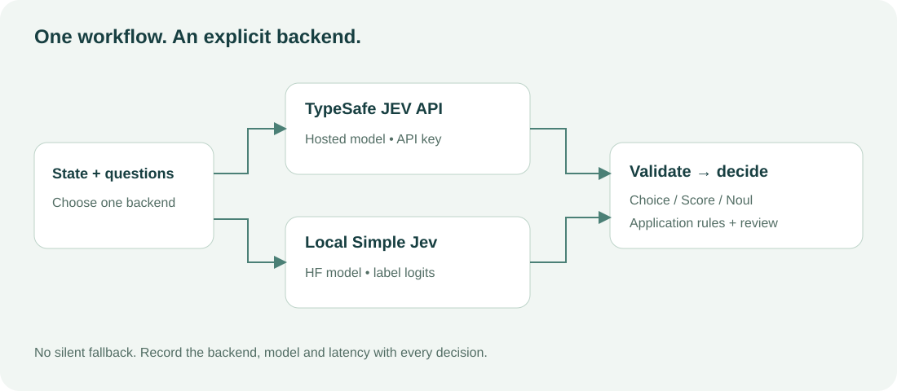

01 / THE OFFICIAL API
Build with real JEV.
TypeSafe hosts JEV. This independent toolkit connects to its API; the local Simple Jev server uses a different model and inference implementation.
One request. Three kinds of decision.
The quickstart asks for a team, an impact score and a refund judgment. It prints the provider’s answers, measured latency and a routing decision controlled by your code.
Run from your checkout
Get your API key from the TypeSafe dashboard and set TYPESAFE_API_KEY in your environment. No local GPU or model download is needed.
git clone https://github.com/vtavakkoli/simple-jev.git
cd simple-jev
python -m examples.triage --backend typesafeHosted calls consume your provider quota. This page does not collect API keys. The browser playground calls Featherless’s public open-model backend; authenticated TypeSafe calls stay in your Python runtime.

Experiments with visible boundaries
- JEV Quickstart — mixed questions and confidence-aware routing.
- CarRacing — JEV chooses steering and pedals. Direct racing remains unvalidated against the live API; assisted mode is separately labelled.
- BipedalWalker — JEV supervises gait speed while a heuristic controls joints.
- Local Gymnasium — Qwen through the local HF server, not TypeSafe JEV.
Measure before you automate.
Keep confidence distinct from choice probability. Select review thresholds using your own evaluation data. Offline tests check code behavior, not model quality, and simulation videos do not establish real-time control.
Based on Featherless Simple Jev. Independent of TypeSafe and Featherless; no claim of model or training equivalence.